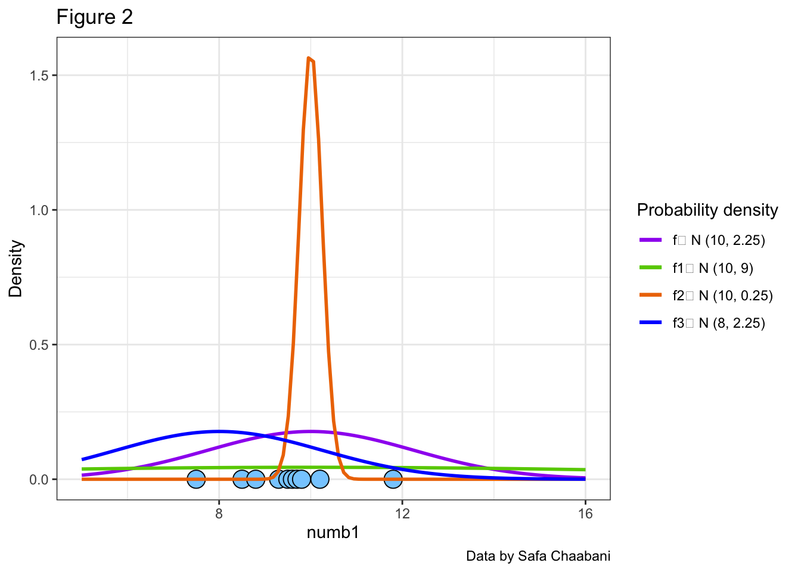
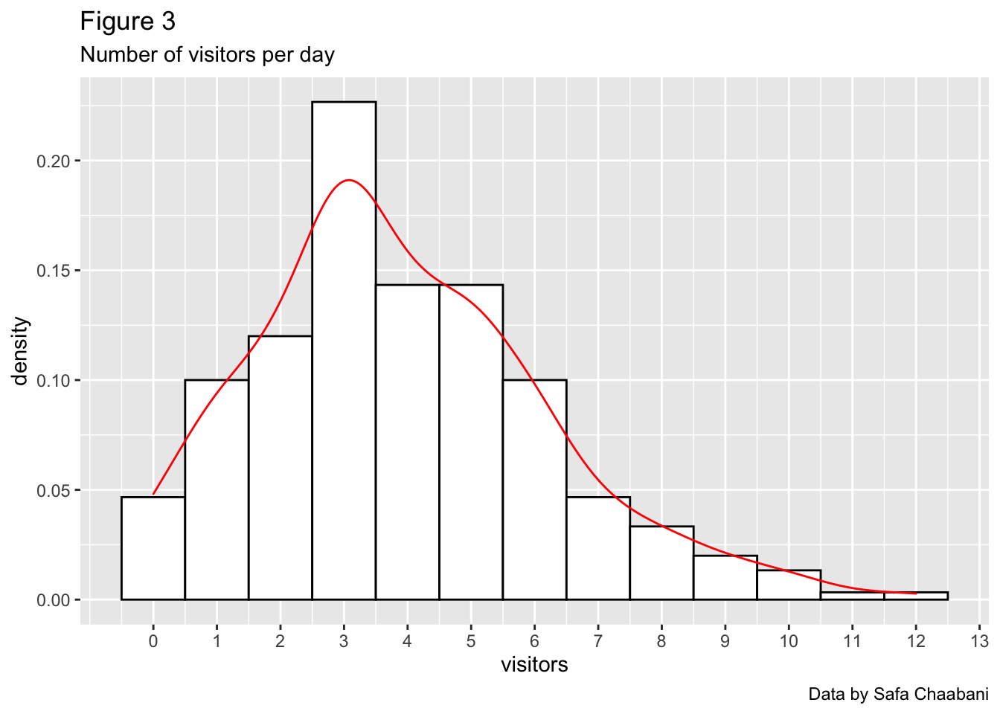

9 Maximum likelihood estimation”
9.0.1 Before you start
You should be familiar with basic statistical theory, basics of R, and probability distributions. You should be able to explain the meaning of: a population, a sample, a parameter, and statistical inference. If you can’t, head here first.
9.1 Introduction
In this section, we will discuss what maximum likelihood estimation is and look at why and how we use it in statistical modeling.
Could use something like the globe example to set this up including the shiny app. Maybe we can think of a different binary example that’s easy to understand?
I suggest as well as the example, that we spend a bit of time here setting the background estimating parameters. I will try and make a separate page on samples, populations, and statistical inference. So, you should be able to reference that rather than explain everything from scratch.
9.2 What is a likelihood?
The likelihood is a fundamental concept in statistics. It is defined as: ‘the probability of obtaining the observed data, given a particular parameter value.’ It is an equation that mathematically represents how the data were generated. We base the form of this equation on assumptions we make about the processes causing our observations. The likelihood assumes that the data are random and the parameters are fixed.
It would be nice to then have a short and simple example here e.g. how we assume data with two outcomes are generated following a binomial distribution. So, some of the equations from further down could come up here to show what a likelihood is as an equation.
9.3 Why do we maximize it?
In this section, I would illustrate how you can calculate parameters of a distribution like the Binomial or Normal or Poisson. Maybe keep the same example as above? I would then ask how confident the students
would be that they have the ‘best’ answer for the population parameter from their sample. Give an example of sampling again and show that the estimate changes. Talk about estimator and estimand. Basically, it is about finding the parameter values that make the observed data most likely (as you explain nicely below)
Maximum likelihood estimation (MLE) is a technique used for estimating the parameters for a given distribution, using some observed data. Hence, MLE allows you to estimate population parameters from sample data such that the probability (likelihood) of obtaining the observed data is maximized.
Let’s suppose that a population is following a normal distribution but its mean and variance are unknown. MLE can be used to estimate them from a sample of the population. It looks for values of the mean and variance so that the observation is the most likely to occur.
The below is a nice example. I would not mention ‘guessing’ as really we are using a fixed mathematical process. I think it is simpler to keep one example all through and then give the code and equations for other distributions at the end e.g. use Binomial throughout then have Poisson and Normal at the end?
Let’s Suppose we have data points from a normal distribution. The data points are shown in the figure 2 below (the R code that was used to generate the image is provided as well). To get an intuition of MLE,we suggest different sets of normal distribution parameters (mean and variance), we plot the curves corresponding to each set and we try to guess which of them would maximize the probability of observing the data. In other words, we want to find the values of mean and variance that result in the curve that best fits the data.
Figure 2: Example of data points (blue dots) and fits from different normal distribution curves generated from different sets of parameter values (f ∼ N (10, 2.25), f1 ∼ N (10, 9), f2 ∼ N (10, 0.25) and f3∼ N (8, 2.25)). Created by Safa Chaabani
The distribution from which the data were generated is most probably f ~ N(10, 2.25), which is the purple curve in Figure 2.
The normal distribution is a tricky one here as there are two parameters so makes it more complex.
This is nice! I would perhaps move this to the end into the normal distribution section for the first paragraph and to the multiple data points section for the second. I think it might also benefit from a bit more explanation of certain parts. For example, describing the distribution as f can be a bit vague, I would maybe focus on a specific distribution instead. Obviously all of the f() etc is totally correct it just might not be as intuitive.
For this exact section I would show how the likelihood can be maximized.
Suppose that X1, X2, X3, …, Xn is a random sample from a distribution f with a parameter\(\theta\).
Places like here - I would add an example of what X would be
where \(f(x_i)\) is a probability density of a particular value \((x_i)\) sampled from a random population. A probability density is the curve corresponding to a given distribution. So values located in areas with higher probability will have higher probability density. For example, the “bell-shaped” curve associated to the Normal distribution is a probability density, whereas probability corresponds to the area under the curve for a given range of values.
If all the values in our sample are statistically independent (the probability of sampling a particular value does not depend on the rest of sampled values), the likelihood of observing the whole sample ( \(L\)), called the likelihood function, is the product of the probability densities of the individual values.
\[ L = f(x1,x2,…,x n∣\theta)=f(x 1∣\theta)×f(x 2∣θ)×…×f(x n∣\theta) \]
For example, \(f\) could be of the family of normal distribution, which depends on parameters \(\sigma\) (standard deviation) and \(\mu\) (mean), and X1, X2, \(\ldots\), Xn would be observations from \(f\).
A maximum likelihood estimate \(\theta\),$ _{ML}$is a value of \(\theta\) that maximizes the likelihood function.
9.3.1 Why log likelihood?
*Probability densities are often smaller than 1, the value of \(L\) can become very small if we have big sample size. For example the likelihood of 500 values sampled from a standard Normal distribution is very small:
*If the variance of the distribution is small it is possible to get probability densities higher than one. Consequently, the likelihood function will have very large values. For example, for a Normal distribution with standard deviation of 0.01 we get:
These are problems because computers have limited capacity and cannot store very large or very small numbers. So, if we use bigger sample sizes, we will get 0 or Inf instead of the actual values of the likelihood function. Let’s try the same for 1000 values sampled from a standard Normal distribution instead of 500:
Therefore, we cannot work directly with the likelihood function.
Often, the average log-likelihood function is easier to work with. It has a nice property, which is that the logarithm of a product of values is the sum of the logarithms of those values:
\[ \hat{\ell} = \frac{1}{n}\log L = \frac{1}{n}\sum_{i=1}^n\log f(x_i|\theta) \]
9.3.2 Finding the maximum
I think the optimization processes part might be a bit too much detail.
In this section, I would refer back to the example earlier where they found it hard to know if they had the maximum. I’d then show how for a simple problem, you can use equations. But for more complex situations we use R. Do you know the default optimization in R? Perhaps only mention that one?
To find the maximum of the log likelihood function \(\hat{\ell}\), we can:
Take first derivative of \(\hat{\ell}\) and equate it to 0. Take second derivative of \(\hat{\ell}\) and confirm that it is negative.
So, basically, this is an optimization process, in which a good optimization algorithm needs to converge to a local minimum from an arbitrary starting point and needs to do it, preferably, as quickly as possible. Many optimization techniques are commonly used to maximize likelihood (Newton’s method, Fisher scoring, steepest descent, Nelder-Mead type (simplex) approaches,BFGS…).
However,these techniques are non-linear optimizers. It means they will minimize the function and not maximize it. Therefore, the convention is to minimize the negative log-likelihood function instead.
When the model is assumed to be Gaussian, the MLE estimates are equivalent to the ordinary least squares method.
It would be good to include a bit more about this, maybe as a drop down.
9.4 Worked examples
I think that one example can be integrated throughout and the others could come at the end under the heading of their distribution. It would be great if the examples could be biological too.
9.4.1 Example 1
We will use a dataset of the number of visitors of a museum per day for 300 days. We want to predict the number of visitors per day.
Here we will use the modeling technique that we have learnt above using R.
Let’s first have a look at the distribution of visitors:
library(ggplot2)
data3 <- read.csv("./Files/visitors.csv",header = TRUE, sep=";")
ggplot(data3) +
geom_histogram(
aes(x=visitors,
y=..density..
), binwidth = 1,colour= "black", fill = "white") + scale_x_continuous(breaks = seq(0, 13, 1))+
geom_density(aes(x=visitors,
y=..density..),colour= "red")+
labs(title="Figure 3", subtitle="Number of visitors per day",
caption = "Data by Safa Chaabani") 
Figure 3: Example of data showing the number of visitors of a museum per day for about 300 days. Data by Safa Chaabani
This looks like an exponential distribution. Since it is count data of the number of visitors, we can use Poisson distribution.
Knowing that x = (x1, x2, . . . , xn) are the observations of the number of visitors which we suppose are from a Poisson distribution with unknown parameter \(\lambda\).
We can write the likelihood function as:
\[ L = \dfrac{\lambda^{\sum\limits^n_{i=1}x_i} e^{-n\lambda}}{x_1!x_2! \cdots x_n!} \]